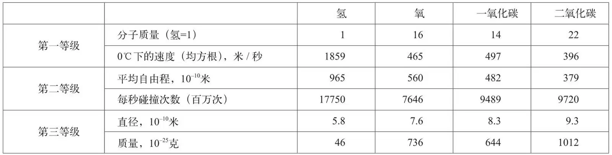
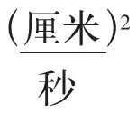
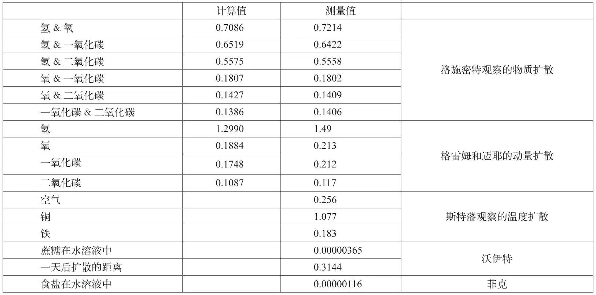

英文
英文麦克斯韦
编者按
有人认为詹姆斯·克拉克·麦克斯韦缺乏演讲天赋，但这篇在英国科学促进会所作的报告中，麦克斯韦对物质分子的那些得到普遍接受的性质描述得非常透彻，给人留下了深刻的印象。麦克斯韦在分子学方面作出了有决定意义的贡献，他提出的气体动力学理论能够说明如何用组成粒子的微观运动来解释气体的宏观性质，如与压力、体积和温度相关的定律。麦克斯韦对氢分子大小的估计只比现在的公认值略大一些。他对分子扩散现象的讨论促使阿尔伯特·爱因斯坦和让·佩兰开始了关于布朗运动的研究，这使人们第一次认识到分子是一种物理实体。 英文
原子是不能被一分为二的实体。分子是组成物质的最小单位。没有人看见或者摆弄过单个分子。因此，分子科学是研究不可见也不可感觉的事物的一门学问，我们无法对它进行直接实验。 英文
人类经常思索很多难以回答的问题。空间是无限的吗？如果是，是从什么意义上讲的？物质世界的范围是无限的吗？在这个范围内是不是每个地方都同等地充满了物质？原子存在吗？或物质是否无限可分？ 英文
自从人类开始理性思考以来，关于这类问题的讨论就一直没有停止过。对于我们每个人来说，一旦开始用心智思考，那些古老的问题就会像从前一样令人觉得新奇。不论是在我们所处的19世纪，还是在公元前5世纪，这些问题都构成了科学的基本部分。 英文
我们对2,200年前位于色雷斯的科学组织所知甚少，也不知道他们用何种方式来传播对自然研究的兴趣。不过那时候确实有人毕生追求知识，热情不亚于英国科学促进会中最杰出的成员。当德谟克利特向他的阿布德拉市民开设讲座讲解自己的原子理论时，他获得的高度评价和丰厚报酬即使在今天的美国也很少有人能比得上。 英文
另一位杰出的哲学家，即以身为苏格拉底的老师而闻名于世的阿那克萨哥拉在德谟克利特之后对原子学说作出了最重要的贡献。实际上，阿那克萨哥拉和德谟克利特两人的原子学说是如此地针锋相对，一方正确则另一方必错。今晚我们对原子到底是否存在这一问题的讨论，用这两位哲学家的对立理论来表达，是最清楚不过了。 英文
随便取一份物质，比如一滴水，来观察它的性质。就像我们看到的其他物质一样，它是可以分割的。把它分成两份，每一份都保持原来那滴水的所有性质，其他可以分割的物质也是一样。每一个部分除了尺寸比整体小些，其他各方面都和整体相似。 英文
就这么一直分下去，直到分出来的水滴小到我们再也看不见，也无法对它们进行操作。但是大家都明白，如果我们的感官更敏锐，我们的设备更精密，细分过程还是可以接着进行下去的。到此为止不会有什么异议，但是现在问题就来了：这样的细分过程可以永远继续下去吗？ 英文
德谟克利特和原子学派的回答是否定的。经过一定次数的分割后，水滴就被分成很多很小的部分，每一部分都不能进一步细分了。也就是我们已经细分到了想象中的原子，原子这个名字的字面含义就是不可分的意思。这就是德谟克利特、伊壁鸠鲁、卢克莱修还有我，你们的演讲者，所赞成的原子论。 英文
另一方面，阿那克萨哥拉认为，水滴被分割成的各个部分，除了和物质性质无关的物体尺寸发生了变化以外，其他一切方面都和整个的水滴类似。因此，如果原来的水滴是可分的，那么分割得到的各个部分也应该是可分的，哪怕分到极小，永无止境。 英文
阿那克萨哥拉学说的根本点是：一个物体的部分和它的整体在所有方面都是相似的，所以被称为同质性学说。阿那克萨哥拉当然没有把它应用到人和动物这样的有机体的身上，但是他认为那些看上去是均质的无机物的确是同质的，并且人类的普遍经验也能证实每一种物质实体毫无例外都是可分的。 英文
原子学说和同质性学说就是这样地针锋相对。 英文
但是现在我们必须转入对分子这个现代名词的讨论，它在《约翰逊词典》里是没有的。分子所包含的概念属于现代化学的范畴。 英文
回到我们原来的例子，一滴水能够最大限度地被分割成一定数量的彼此相似的部分。每一个这样的部分都是现代化学家称作的水分子。水分子包含两种不同的物质，氧和氢，所以它决不是一个原子。通过一定的处理方式，确实可以把水分子分解成两部分，一部分含氢，另一部分含氧。根据公认的理论，每一个水分子都包含两个氢分子和一个氧分子。至于这些氢分子和氧分子是不是不能再分解的原子，我这里先不去确定。 英文
现在我们明白了分子是什么，它和原子有什么不同。 英文
一种物质的分子是很小的，一方面，如果许多同样的分子聚合在一起，就会形成大量这种物质；另一方面，如果这些分子的某个部分缺失，它们与其他经过相同处理的分子聚合在一起也不能形成原来的物质。 英文
任何物质，无论是简单的还是复合的，都有自己的分子。如果这个分子再被分割，形成的部分就是其他物质的分子。一个原子，如果确实存在的话，应该是一种基本物质的分子。不是每个分子都是原子，但是每个原子都是分子，所以我将使用含义更广的分子这个术语。 英文
我不想浪费时间去详细解释现代化学关于各种物质分子的理论。我作这个报告的目的是讲述分子科学中普遍的而不是具体的问题。不是因为我们恰好是化学家、物理学家或者其他某个领域的专家才对这个与所有物质息息相关的中心问题感兴趣，而是因为我们都属于人类这个物种，其所具备的资质促使我们不断地深入研究事物的本质。 英文
现在我们发现，就像早期物理猜想时代一样，所有的物理研究似乎都汇集到了同一点上；每一个探求者，在眺望发现之途指向的茫茫区域时，虽然目力各有不同，看到的却都是同一件宝物的幻像。 英文
有些人眼中的原子是一个物质点，被有势力场包围着。另一些人则看不到力的存在，只看到裸露而坚硬的不可穿透的实体。 英文
很多人看到幻像在眼前消退而去，躲进那不可思议的渺小之物最隐秘的庇护所之后，不得不承认宝物非他所属；各个时代的哲人们互相劝诫对方去追求更实际、更容易达到的目标。虽然如此，自从科学的启蒙时期直到今天，每一代都不乏最富才智的人投身于对最终原子的探求。 英文
我们今天晚上的任务是介绍分子科学中的一些研究成果，特别是向你们展示那些关于分子本身的现在已经比较确定的认识。卢克莱修所描述的旧原子论到了现代重获新生。他认为所有物体中的分子都在不停地运动，即便当物体本身处于静止状态时也不例外。在固体中，分子的运动只局限于一个很小的范围，哪怕是利用当前最好的显微镜我们也察觉不到它们的移动。但是对于液体和气体的情况，分子的运动没有受到确切的范围限制，可以在整个物质中移动，哪怕这个整体没有受到任何可见的运动的干扰。 英文
这个过程被称为扩散。它在气体、液体甚至一些固体中持续进行着，可以由实验验证，同时它也是分子运动论最有力的证明之一。 英文
现在分子科学的最新进展，是从研究这些运动着的分子碰撞固体表面的机械效应开始的。飞行中的分子一定会撞击所有置于其中的物质。根据我们的理论，这种持续不断的撞击，就是产生所谓的空气和其他气体压力的唯一原因。 英文
丹尼尔·伯努利可能是第一个想到这一点的人，但是他当时没有我们今天的实验手段来验证他的理论。后来日内瓦的勒萨热也独立提出过这个理论，但是他的工作主要是用原子碰撞来解释重力现象。赫拉帕斯在他1847年出版的《数学物理学》一书中，将这个理论更广泛地应用于各种气体。焦耳博士计算了氢分子的实际速度，今天他没有在场实在让人感到遗憾。 英文
大家普遍认为这一理论的进一步发展是从克勒尼希的一篇论文开始的。但在我个人看来，这篇文章本身并没有在前人工作的基础上作出什么改进。不过它引起了克劳修斯教授对这个问题的关注，而后者对以后的理论发展起了很大作用。 英文
我们都知道放置在一个容器中的空气或其他气体会对容器壁以及放置在其中的其他物体表面产生压力。根据气体动力学理论，这个压力完全是由分子碰撞这些表面产生的。这种碰撞带给表面的一系列冲击之间的间隔非常小，产生的效应和连续的压力没有什么两样。 英文
假定分子的速率一定，但数量不同。那么平均来说，每个分子碰撞器壁的次数相同，产生的冲击强度也相同，因此对总压力的贡献也相同。这样一来，一个固定容积的容器承受的压强和其中分子的总数量，也就是其中的气体总量，成正比。 英文
这就是罗伯特·玻意耳发现的空气压强正比于其密度这一事实的完整动力学解释。它还表明，如果我们将不同批次的气体加入容器，则无论它们的种类是否相同，每个部分都将独立地产生自己的分压强。 英文
下一步让我们假定分子速率增加的情形。因为每秒钟内，每个分子碰撞器壁的次数相应增加，同时每次碰撞的冲击强度也成比例增加，所以每个分子对压强的贡献和它的速度的平方成正比。在我们现在的理论中，分子速率平方的增加和温度的增加相对应。这样我们就能解释加热气体导致压强增加的效应，以及随温度增加各种气体体积同比增大的查理定律。 英文
动力论还告诉我们不同质量的气体分子互相碰撞会发生什么结果。质量大的分子比质量小的分子运动速率要小一些，所以平均来说，每个分子，不论质量大小，其动能都相同。 英文
对这一动力学定律的证明是我最先提出的，近来被路德维希·玻尔兹曼博士加以改进和发展。它的一个重要推论就是在标准温度和压强下，1立方厘米的任何气体都含有同等数量的分子，这就是盖·吕萨克定律关于相同体积气体的动力学解释。现在我们举一个具体的例子来计算一个氢分子的实际速率。 英文
在温度为冰的熔点，压力为一个大气压时，1立方厘米氢气的质量是0.00008954克。这么小的质量的运动（是合在一起还是分散到各个分子，对结果没有影响）到底需要多大速率，才能在1立方厘米的容器壁上产生测量到的压强呢？焦耳博士首先对此进行了计算，他的结果是每秒1,859米。通常对我们来说，这是一个很大的速率，比任何炮弹的速率都要大。从附表中大家可以看到，其他气体的速率要小一些，但是无论如何都远大于子弹的速率。 英文
现在我们要设想一下这个大厅里的空气分子以每分钟17英里的速率向各个方向飞行。 英文
如果所有分子都向同一个方向飞行，它们就会形成速率为每分钟17英里的强风，只有从加农炮炮口出膛的风速能够接近这个速率。那么，你我怎么能够在这里保持站立？这只是因为这些分子飞行的方向各不相同，在前面和后面撞击我们的分子冲击作用互相抵消。事实上，如果这种分子碰撞哪怕停止一刻，我们也会静脉肿胀，不能呼吸，一命呜呼。这些分子不只是撞击我们和房间四周的墙壁。考虑到它们数量巨大，正在四处乱飞，你会发现它们不可能不互相碰撞。每当两个分子撞到一起，其轨道就都会改变，而它们会飞向新的方向。这样每个分子都在不断地改变轨道，因而虽然其速率很快，但要从出发点移开一定距离也需要不少时间。 英文
我这里有一个里面装着氨气的瓶子。氨气的味道大家可以闻得出来。它的分子运动速率是每秒600米，因而如果它们的运动轨迹没有因为和大厅里的空气分子碰撞而改变，就算坐得最远的听众都会在我说出氨气这个名称之前闻到它。但是实际上并非如此，每个氨气分子都被空气分子撞来撞去，一会儿向东一会儿向西，就像一只野兔，老是改变方向，虽然步子很快，但是跑不了多远。虽然如此，在离瓶子一定距离以内的听众还是开始闻到氨气的味道了。氨气确实在空气中不断地扩散着，只是速率较慢而已，如果我们把大厅的所有出口都封起来，不让空气流走，并保持几个星期不动它，那么氨气就会均匀地散布在大厅的每个角落。 英文
气体的这个相互扩散的性质是由普里斯特利最先指出的。道尔顿指出这种扩散的发生与相互扩散的气体间发生的具体化学反应无关。格雷姆的研究工作集中在那些能为分子运动提供线索的现象上。他仔细研究了扩散现象，最早得到了可以用来计算扩散速率的结果。 英文
再晚些时候，维也纳的洛施密特教授精确地测量了气体分子相互扩散的速率。 英文
他把两种不同气体分别装入两个相似的竖直试管中，轻的气体放在重的气体上面以防止对流产生。随后打开滑动阀门让两个试管相通。将它们静置大约一个小时以后，他关上阀门，然后测量每种气体中有多少已经扩散到了另一种气体中。 英文
因为大多数气体都是不可见的，所以我得用氨气和盐酸这两种相遇后能生成固体反应物的气体来展示气体的扩散过程。氨气比较轻，所以放在盐酸上面，中间隔着一层空气。但是你们马上就可以看到，这两种气体能通过扩散穿过空气层而相遇，并产生一股白烟。整个过程看不到气体流动或者其他任何可见的运动。容器的每个部分都像一罐未受扰动的空气一样平静。 英文
但是根据我们的理论，这种气体间相互扩散的运动进程，同样在平静的空气中发生着。区别只是当扩散发生在不同气体间时，追踪分子从一处到另一处的移动要容易一些。 英文
如果我们想要在头脑中构思出一幅表现分子在平静空气中运动的图像，最好去观察一群蜜蜂，每只蜜蜂都拼命地飞来飞去，先朝一个方向飞，然后再朝另一个方向飞，但是整个蜂群不是停着不动，就是在空中缓慢地移动。 英文
有的季节蜂群可以飞得很远，养蜂人为了能在别人的地盘上也能认出自己的蜂群，有时会向蜂群洒一把面粉。现在我们假定面粉正好把蜂群下面一半的蜜蜂染白，而上面一半没有沾上面粉。 英文
如果这群蜜蜂继续散乱地飞来飞去，蜂群上半部就会有越来越多的沾上面粉的蜜蜂，直到它们均匀地分布于上下两部分。但是这种扩散的原因不是因为蜜蜂沾上了面粉，而是因为它们到处乱飞。沾面粉标记的目的只是为了帮助我们识别特定的蜜蜂。 英文
我们没有办法标记一定数目的空气分子，使得它们在扩散到其他分子中之后还能被追踪到。但是我们可以用某些参数的传递来证明它们的扩散。 英文
比如说，如果一个水平空气层向水平方向移动，那么从该层扩散到上下两个相邻层的分子将携带水平动量，并把这个动量传递给相邻的上下空气层。而从相邻空气层中扩散进入这个水平移动的水平层的分子，会减慢水平层的移动。相邻水平层之间的作用，就像两个粗糙固体表面之间的滑动和摩擦。固体之间的这种作用叫做摩擦，在流体的情况下则称为内摩擦或者粘滞力。 英文
实际上这只不过是另一种类型的扩散——动量的横向扩散。其大小可以通过观察第一种扩散，也就是物质扩散的数据计算出来。研究气体通过长细管的流逸过程，格雷姆确定了不同气体的相对粘滞系数。粘滞系数的绝对值由奥斯卡·迈耶和我通过圆盘振动的实验结果推导得到。 英文
另一种跟踪分子在平静空气中扩散的方法是加热容器顶层的空气，然后观察热量向下层传递的速率。这实际上是第三种类型的扩散——能量扩散。在直接进行热传导的实验之前，这种传递的速率是由粘滞系数的实验结果计算出来的。维也纳的斯特藩教授最近通过一个极其精巧的方法，成功地确定了空气的传导系数，他发现测量值和理论预测值惊人地符合。 英文
所有这三种扩散——物质、动量和能量的扩散，都是由分子的运动完成的。分子的运动速率越大，在它与其他分子碰撞而使其运动方向发生改变之前所走的行程就越长，扩散的速率就越快。既然分子速率已知，通过扩散速率的实验，我们就可以确定一个分子在两次碰撞之间所走的平均距离。波恩的克劳修斯教授是第一个给出分子受激运动精确构想的人，他把这个距离叫做分子的平均自由程。根据洛施密特教授的扩散实验，我计算了4种常见气体的分子平均自由程。附表中列出了一个分子在两次碰撞之间的平均距离，这个距离非常之小，即使用最好的显微镜也不能分辨。它大概是光波长的1/10，这样说你们就知道它有多小了。以分子的运动速率之大，行走这么短的距离，所用的时间当然是非常之短。我曾计算过一个分子每秒钟内碰撞的次数，结果也列在表中，都是几十亿次的水平。一秒钟之内方向要被改变几十亿次，难怪分子的运动速率虽大，却走不了多远。 英文
这三种扩散过程在液体中也会发生，但是它们之间的速率关系就不像在气体中那么简单。液体的动力学理论不像气体的理论那么完善。看上去它们之间的根本区别是：相对而言，气体分子大部分时间是自由飞行，和其他分子发生碰撞的时间不多；液体分子则正好相反，平均自由程很短，总是在和附近的分子发生密切接触。 英文
这样一来，液体中的动量扩散就比液体分子本身的扩散要快很多，这就好比在密集的人群中递送一封信，通过众人之手相传要比找一个专门的送信人穿越人群快一样。我这里有一个罐子，下半部装的是硫酸铜溶液，上半部装的是纯水。这个罐子从星期五就一直放在这里，而现在你们几乎看不出蓝色的硫酸铜扩散到上面的纯水中。沃伊特仔细计算了一种蔗糖溶液的扩散速率。把他的结果和洛施密特得到的气体扩散速率进行对比，我们发现在气体中一秒钟就能完成的扩散过程，在液体中则需要一整天。 英文
液体中动量的扩散速率也比气体中动量的扩散速率慢，但是没有差那么多。等量的运动在水中的衰减时间大概是空气中的10倍。让我来搅动一下这两个罐子，一个装的是水，另一个只有空气，大家看看结果是什么？液体和气体在温度传递上的速率差别还要更小一些。 英文
固体中的分子也在不停地运动，但是它们的运动被限制在很小的范围内。所以物质扩散不会发生在固体中，但动量和能量扩散可以非常自由地进行。不过某些液体可以渗过像果冻和树胶一类的胶质固体，而氢气能够透过铁和钯。 英文
时间有限，我们只能简单提一下电解这个最奇妙的分子运动现象。这里有电流通过酸性的水时，两个电极分别产生氧气和氢气。电极之间的水是完全静止的，但是其中必然有氧和氢的相对流动。克劳修斯研究了这一过程的物理学原理，给出理由认为普通水中的分子不但是运动的，而且相互碰撞的力量还很大，造成水分子中氧和氢的分离，分离的氧和氢在水中四处游动，寻找因同样原因而游离的其他对象来结合。在普通水中，这个交换过程在整体上没有造成可观测的效应。但是一旦电动势开始起作用，就对独立分子的运动产生定向影响，驱使游离分子向相应的电极运动，直到碰上异性游离分子而形成相对稳定的结合体。这个结合体还有可能再次被冲击离解。这样来看，电解是一种电动势协助下的分子扩散过程。 英文
分子科学的另一个分支是关于液体和气体之间的分子交换。它既包括同一种物质气液两态之间的蒸发和凝结理论，也包括液体吸收不同种物质气体分子的理论。安德鲁斯博士关于气液两态之间关系的研究表明，虽然我们基本教科书中的结论看上去如此简洁，似乎是天经地义，但其实际的意义可能包含着非常深奥的原理。在有合适的人将其搞清楚之前，人们认为一切已经尽善尽美了。 英文
以上就是分子科学取得数据成果的一些领域。我们根据完整的相关知识，把这些最终的成果分成三个等级。 英文
第一个等级中有不同气体分子的相对质量以及它们以米每秒为单位的速度。这些数据是根据气体压强和密度的实验结果得出的，精度很高。 英文
在第二个等级中，我们应该归入的是不同种气体分子的相对尺寸、平均自由程和每秒钟的碰撞次数。这些参数的量值是从三种扩散的实验结果推导出来的。在实验方法得到极大改进之前，这些公认的结果只能被看作是大概的近似。 英文
还有一批参数只能放进第三个等级，这是因为我们在这个等级中的相关知识只是基于可能的推测，既不像第一等级中的那么精确，也不像第二等级中的那样近似精确。这里面包括分子的绝对质量、绝对直径和1立方厘米中的分子数目。我们有不同分子的相对质量的准确结果，也大概知道它们的相对直径。由此我们可以得到分子的相对密度。这些都是确实有据的结果。 英文
液体强大的抗压缩性似乎表明：其分子之间的距离已经很近，和同一物质的两个气态分子在碰撞时发生相互作用的距离差不多。洛伦茨·迈耶想了一个办法验证这个猜想，他对各种液体的密度和相应液体蒸气的相对密度的计算值进行比较，发现它们明显相关。 英文
现在洛施密特根据动力学原理推导出一个不寻常的比例关系：气体的体积和该气体中所有分子体积之和的比值，等于分子平均自由程与其直径的1/8之比。 英文
假定气体液化后的体积，比相应分子的体积之和大不了多少，我们就可以通过这个比例关系得到分子的直径。1865年洛施密特由此第一次估计出了分子的直径。斯托尼先生在1868年，汤姆孙爵士于1870年也都各自独立发表了类似的结果。后者除了以上的考虑，还考虑了与肥皂泡厚度以及金属电特性有关的结果。 英文
表中的结果是我根据洛施密特的数据计算得到的。按照这个表，200万个氢分子排成一列，只有1毫米长。100万的四次方那么多的氢分子合起来的质量只有4～5克。 英文
在标准压强和温度下，1立方厘米的任何气体都含有1.9×1019那么多的分子。这些量值都属于前面所说的第三个等级，不用我说你也知道，它们只是当前的推论。除非由独立方法得到的比现在多得多的数据经过比较后都趋向一致的结果，否则我们不能轻易接受以上的结果。 英文
到现在为止，我们一直认为分子科学是对自然现象的一种探索。虽然所有科学工作的目的都是为了揭示自然的秘密，但是它还有另外一个至少同样重要的作用，就是对科学工作者心灵的影响。只有科学工作才能让他们发明并掌握新的方法，这使他们站在了一个新的高度，看到除了自己的研究领域之外，其他许多自然领域也呈现出新的面貌。 英文
分子领域的研究发展了一套自己的方法，也打开了一扇观察自然的窗户。 英文
为了让我们在头脑中建立一幅原子运动的图像，卢克莱修让我们观察一束射入暗室的日光（廷德尔博士用同样的设备展示了我们呼吸的灰尘的运动情况），在这束日光中我们可以看到向各个方向追逐乱窜的尘埃。他告诉我们，这些可见尘埃的运动，是更加复杂的不可见的原子运动不断将它们撞来撞去的结果。就像丁尼生告诉我们的一样，在卢克莱修梦想的自然中，他
“看见闪耀的原子流
和她在无穷宇宙中的激流，
在无尽的虚空中衰耗，
又飞来撞在一起，
创造一个又一个事物的构架，
永不止息。”
难怪他试图打破必然的枷锁，让他的原子在很不确定的时刻和地点改变轨迹，因而赋予它们一种非理性的自由意志，这就是他在物质理论中对我们所知的随机行为的产生所做的唯一解释。 英文
如果我们只需要研究两个分子，而且知道所有的数据，我们就可以计算它们相互碰撞的结果。但实际上有极多的分子，每个分子每秒钟都要经历极多的碰撞，问题的复杂性似乎超越了任何合理解答的可能性。 英文
现代原子论者采取了一种我认为在数学物理学科中是全新的方法，尽管它在统计部门中已经应用很久了。当F部门的工作人员得到一份人口普查报告，或者是其他包含经济和社会科学统计数据的文件时，他们先把整个人口按照年龄、所得税、教育水平、宗教信仰或犯罪记录分组。人口的数量太大，很难一一跟踪每个人的实际情况。为了在人力资源有限的情况下把工作量控制在合理范围，他们把注意力集中在少数几个人为划分出来的组群上，每个组群个体人数的变化，而非每个个体的状态变化是他们进行研究工作的最初数据。 英文
这显然不是研究人类性质的唯一方法。我们可以观察个体的行为，也可以按照当前最好的理论，根据以往的特征预测目前情况下的行为，并把观察结果和预测的行为相比较。人们采用这种方法以增进他们对人类性质各个方面的认识，就像天文学家通过对比行星的实际位置和依据已知参数预测的位置之间的差别来修正轨道参数一样。父母、校长、历史学家、政治家对人性的研究，和登记员、制表人还有注重数据的政治家的研究是不同的。一个可以叫历史方法，另一个则是统计方法。 英文
动力学方程完全是历史方法定律在物质研究上的应用，但应用这些方程需要知道所有的数据，然而哪怕是实验中物质最小的部分也包含着极多我们看不见的分子。我们不可能确定任何一个分子的实际运动状况，所以必须放弃严格的历史方法，采用统计方法来处理大量分子的情况。 英文
应用在分子科学中的统计方法牵涉的数据是大量分子的参量的总和。在研究这类参量之间的关系时，我们碰上了一种新的规律，也就是平均值的规律。对于实际应用，依赖这些规律就足够了，但是它们不能给出理论动力学定律所具有的绝对精确性。 英文
分子科学告诉我们：实验永远只能提供统计信息，从实验中总结的定律都没有绝对的精确性。但是当我们的关注点从实验转向分子本身时，我们就离开了充满偶然性和变化的世界，进入到一切都是确定不变的领域。 英文
分子都精确地具有恒定不变的属性，这种属性是分子所组成的物体的可测宏观参数所不具备的。首先，所有分子的质量和所有其他性质都是绝对不变的。其次，同种物质所有分子的所有性质都是绝对相同的。 英文
让我们来考虑一下氧和氢这两种分子的性质。 英文
我们可以从空气、水和各个地质时代的岩石等不同来源制备氧气样品。这些样品形成的历史完全不同。如果在几千年的时间里，不同的环境能造就不同的性质，这些氧气样品应该就能表现出这些不同的性质。 英文
同样地，我们可以从水、煤炭或者像格雷姆那样从陨铁中制备出氢气样品。任取两升氢气样品，它都可以和任取的一升氧气样品反应，正好生成两升水蒸气。 英文
如果在任何一个样品的整个历史中，不论它是固锁在岩石中，还是漂流在海洋里，或者是跟着陨石穿越着未知的区域，只要分子发生了任何变化，上面的关系都不能再保持。 英文
我们有另一种完全不同的办法来比较分子的性质。分子虽然不能被毁灭，但也不是刚性实体，它有内部运动，当内部运动被激发时，分子发出射线，这个射线的波长表征了分子振动的周期。 英文
光谱仪可以比较不同光的波长差别，精度可达万分之一。用这个办法，我们可以确认，不但我们实验室中每一个氢气样品中的分子具有同样的振动周期组合，就连太阳和其他恒星发射的光也存在同样的振动周期组合。 英文
这样我们就确信了在茫茫的宇宙中也存在和我们的氢分子一样的分子，或者说至少在那些我们用来观察分子的光线放射出时，它们是存在的。 英文
比较古埃及和古希腊的建筑规模，可以感觉到它们似乎使用了同样的度量标准。因此，尽管历史上没有留下两个国家都使用同样的肘长作为长度标准的记载，我们也许可以通过建筑本身证明这一点。我们也有理由认为，肯定是某个实物长度标准在某个时候被人从一个国家带到了另一个国家，或者两个国家从同一个来源得到了这个标准。 英文
对天空中的星体，我们只是通过它们发射的光线证实它们的存在，它们之间的距离如此遥远，物质从一个恒星到另一个恒星的传递是完全不可能的，但是它们发射的光线，除了作为证明这些遥远天体存在的唯一证据以外，还告诉我们，组成每一个天体的分子都和我们在地球上发现的分子相同。比如，不论是天狼星还是大角星，上面的氢分子都以同样的周期振动。 英文
宇宙中的每一个分子，都铭刻着一个度量系统的痕迹，它的独特清晰，就如同巴黎档案局的米原尺，或者卡尔纳克神庙的皇家双肘尺一样。 英文
任何进化论都不能解释分子的相似性，因为进化隐含着不断的变化，而分子既不生长也不腐朽，不能被制造也不能被摧毁。 英文
自从自然界形成以来，自然界的所有过程都没能使任何分子的性质有丝毫的改变。所以我们不能把分子的存在或其性质的同一性归结为任何自然原因的作用。 英文
另一方面，正像约翰·赫歇尔爵士说的那样，同类分子精确相同的性质是其所构成的物质的根本特征，这就排除了分子的永恒自存在性。 英文
这样一来，我们就被引领着，沿着一条严格的科学道路，走到了科学的尽头。这不是说科学手段不能分解分子就不能用来研究分子的内部机制，就像不能因为科学不能组合成生物就不用她来研究生物一样。但在追溯物质的历史时，科学被困住了，她一方面确认分子已被创造，另一方面又确认任何自然界的过程都不能创造分子。 英文
科学不能理解物质如何被无中生有地创造出来。当我们承认由于物质不能永恒自存在，因此它一定已经被创造出来的时候，我们已经到了自己思维能力的极限。 英文
只有当我们思考物质的存在形式，而不是物质本身的时候，我们的思维才算找到了一些可以解决问题的线索。 英文
我们知道，形而上学者认为必要的真理是：物质必须具有一些基本的性质——它应该存在于空间中，能够运动，运动应该是持续的等等。我们可以利用已知的与这些真理有关的知识进行推导，但是并无数据可以用来猜测这些真理的本源。 英文
但是每一个氢分子的质量都正好是这么多，这个事实就完全是另一个性质了。这种质量的分布，或者用查默斯博士的词语——这种布置，实在是太特别了，让我们都不习惯。 英文
比如，行星轨道的形式和尺度，也不是由任何自然定律决定的，而是取决于特殊的质量的布置。作为米制计量体系标准的地球的尺寸也是这样。但是这些天文和地理的量值在科学上的重要性都远不能和构成分子系统基础的那些最基本的标准相比。我们知道自然界过程一直在起作用，就算最后不摧毁，它们至少也要改变地球和整个太阳系的秩序和尺寸。然而，尽管在历史上宇宙曾经发生过灾变，以后也可能再发生，虽然旧的体系可能被消灭，新的体系在旧体系的废墟上演化发展，但作为这些系统组成基础的分子——物质宇宙的基石，却不会被破坏和磨损。 英文
它们被创造的时候是什么样，现在还是什么样，数量、大小和质量都没有丝毫改变，从铭记在它们身上的不可磨灭的特征，我们也许能够明白，我们对测量的精准、言语的真切、行为的正义这些人类最高尚品质的追求，是因为它们也是造物主形象的根本组成部分。他当初不仅创造了天和地，也创造了组成天和地的所有物质。 英文
分子数据表

扩散数据表：单位是


（何钧 翻译；鲍重光 审稿）
* 皇家学会会员克拉克·麦克斯韦教授在布拉德福德对英国科学促进会作的报告。